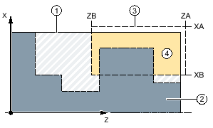
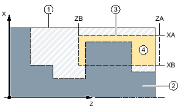

Function
Using the "Plunge turning" function, you can machine any shape of groove.
Contrary to grooving, the plunge turning function removes material on the sides after the groove has been machined in order to reduce machining time. Contrary to stock removal, the plunge turning function allows you to machine contours that the tool must enter vertically.
You will need a special tool for plunge turning. Before you program the "Plunge turning" cycle, you must define the contour.
Blank
For plunge turning, the cycle takes into account a blank that can consist of a cylinder, an allowance on the finished-part contour or any other blank contour.
Precondition
For a G code program, at least one CYCLE62 is required before CYCLE952.
If CYCLE62 is only present once, then this involves the finished part contour.
If CYCLE62 is present twice, then the first call is the unmachined part contour and the second call is the finished-part contour (also see Chapter "Programming").
| Note |
Execution from external mediaIf you execute programs from an external drive (e.g. local drive or network drive), you require the "Execution from external storage (EES)" function. |
Set machining area limits
If, for example, you want to machine a certain area of the contour with a different tool, you can set machining area limits so that machining only takes place in the area of the contour you have selected.
The limit lines must not intersect the contour on the side facing the machining.
This limit has the same effect during roughing and finishing.
Example of the limit in longitudinal external machining
Permitted limit: Limit line XA is outside the contour of the blank
Impermissible limit: Limit line XA is inside the contour of the blank
Feedrate interruption
To prevent the occurrence of excessively long chips during machining, you can program a feedrate interruption.
Input simple
For simple machining operations, you have the option to reduce the wide variety of parameters to the most important parameters using the "Input" selection field. In this "Input simple" mode, the hidden parameters are allocated a fixed value that cannot be adjusted.
| | Machine manufacturer Various defined values can be pre-assigned using setting data. Please refer to the machine manufacturer's specifications. |
If the workpiece programming requires it, you can display and change all of the parameters using "Input complete".